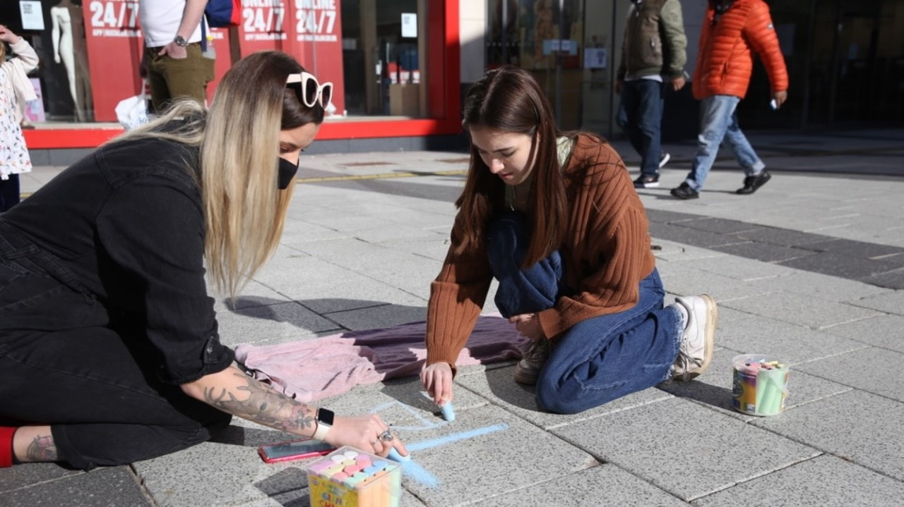
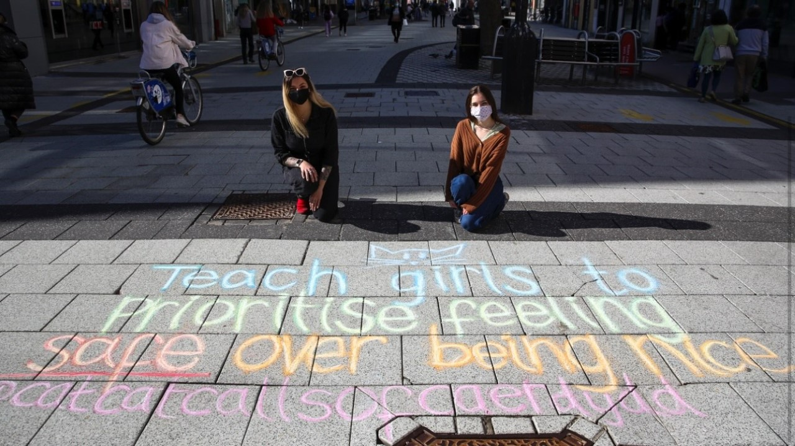

No one should plan their schedule around avoiding harassment on the street. But people who regularly experience it navigate public places differently. They try to take the well-lit route, or drive in the fear of getting harassed on public transport. They are constantly, and sometimes unconsciously, maneuvering around potential dangers and trying to adapt their behaviour and their mobility.
Tactics of avoiding street harassment come down to personal experiences. Since official data of incidents is scarce, it cannot entirely give an accurate picture of places to avoid, or how to avoid them.
But technology can be one way to fill in that data gap.
Mapping apps and tools are taking off in the world’s biggest cities. Women are documenting their experiences in databases, blogs, heatmaps and mobile apps.Some of those tools allow women to anonymously report incidents to authorities and create maps that can warn people of places with a high number of incidents.
Safe & the City is one of them. Set up in 2018, Safe & the City has mapped tens of thousands of incidents across the UK. It is based on the real life stories and experiences of people and their live heat map shows the places where street harassment incidents happen frequently. Most of the incidents reported via the app have taken place in the UK, although it also shows some limited data from Europe and cities in South America, Africa and South Asia.
“People are having to take control of street safety now,” says Sarah Farrance, co-founder of Catcalls of Caerdydd. “These apps rely on people like us reporting, and having to take it into our own hands to find a safe route home.”
The app has built-in GPS navigation, and it can provide users with safe routes from and to their chosen destinations. It can also display routes that are ranked for safety by other users on the app.In the UK Safe & the City also shows the nearest registered safe place, where people can go if they feel threatened or have experienced an incident while out in public.
Providing safe spaces in public has also been the focus of FOR Cardiff, a non profit organisation working to make Cardiff city centre a more safe and welcoming place.
Businesses in Cardiff can sign up to become safe space, and be given special training to provide support to people who need it. FOR Cardiff are launching a city wide appeal for business to volunteer to be part of the Safe Place Network. They have also created an app that will show users the nearest safe place they can go to.
“If you feel vulnerable in the city centre, you can get your mobile phone and go on the app which comes up with a map like Google Maps, and say take me to my nearest safe space,” says Ian Tumelty, Crime Reduction Manager at FOR Cardiff and former police officer.
The Angel Hotel in Cardiff is the first Safe Place in the network and a city-wide scheme is expected to kick off on 20th September in time for freshers’ week.
Different mapping tools are available across other UK cities too. The Bristol Street Harassment Project collects data from personal accounts about street harassment incidents around the city.
Every reported incident is mapped out, along with a brief description of what happened if available, and the map is available both online and through the Ushahidi app. The reporting of incidents is anonymous and no identifying information is included in the posts.
Blackpool and Sheffield have similar tools for mapping incidents of street harassment and public sexual harassment via Google maps that are avilable online.
The augmented reality app BlippAR is mapping the street harassment experiences of women in the city of London. Women can mark locations of incidents on an interactive map or take photos to report them. It is part of the #WeCount campaign that Women’s Equality Party have launched to highlight the rise of street harassment incidents in London
Users of the app can also scan the special markers placed on various streets of London and reveal the stories of women that have been harassed in the marked spots.
“We want to show that women right across the UK are affected by this every day – and that every one of us counts,” says a representative of the Women’s Equality Party.
“Raising awareness for street harassment is only the first step,” say Grace and Sarah, the faces behind the Catcalls of Caerdydd social media campaign.Grace and Sarah decided to start the initiative to make women feel less alone in their experiences and educate people about street harassment.
The two women often take to the street where they chalk messages on pavements around Cardiff to raise awareness for street harassment. Since they started their initiative, they have received dozens of messages from women, some of them personal stories, and some filled with gratitude. “We get a lot of messages, people clearly relate to it, ” says Grace.
“It's sad that we have got to a point where we have to explain to people that you shouldn’t harass random people on the street, but it is one of the easy steps. We unfortunately have to make people understand somehow that this isn’t something that is appropriate to do to another person.”
Initiatives like Catcalls of Caerdydd can help paint a picture of street safety for women in the UK and provide the foundation for social change.
“More initiatives like what we try and do help to some extent, but I think we do that because that's basically the most we can do. We can't change how people think. So we have to find other ways to keep safe,” says Sarah.